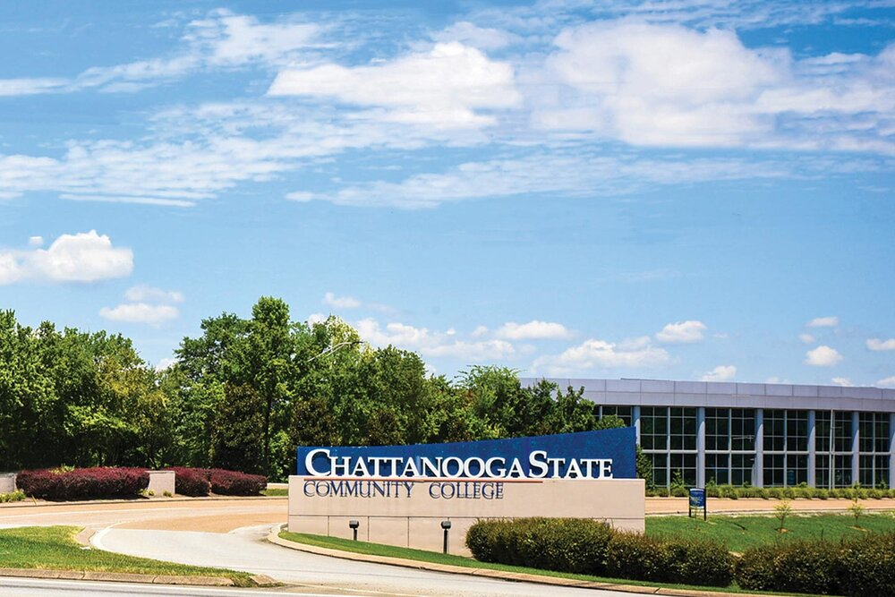

About Our Campus
Chattanooga State is a community college in the Chattanooga, Tennessee area. Chatt State offers degrees including up to 50 career programs!
Chatt State is the only community college in Tennessee that has a TCAT program as an integral part of its organization. The school was established September 20th, 1965, and the current president is Rebecca Ashford.
